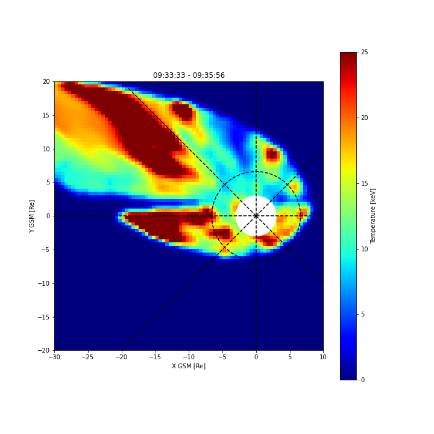
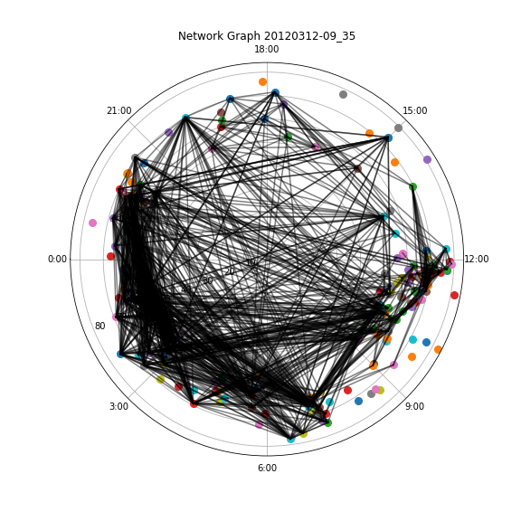
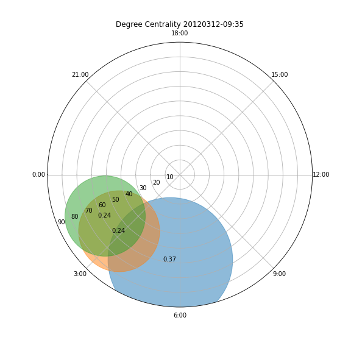
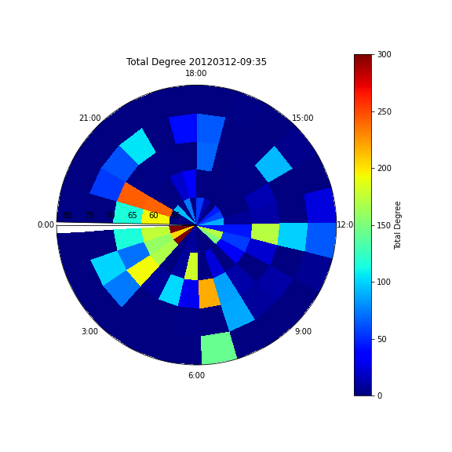

Network Analysis and Energetic Neutral Atoms
Energetic Neutral Atoms (ENAs)
Understanding the dynamics of the magnetotail both spatially and temporally is one of the biggest areas of research in space physics. How the energy transports from the tail side connection of the magnetic field all the way into the ionoshpere is crucial to understand this dynamics. Many challenges stand in the way of understand these various phenomena, not the least of which is the over reliance on in situ observations. Much of the progress made over the decades to resolve these issues revolves around having the various satellites being in the right place at the right time. This limitation slows down how much of the tail can be analyzed at a given time becuase almost all observations are localized and we rarely ever get a global context of these phenomena. Multi-point obeservations can offer some global view of the magnetotail but the coordination required to get a global context of an event is a challenge. Simulations have been used to bridge this gap, but that also relies on in situ measurements both for inputs into the algorithm and also for validation of the results. Having a global view of the magnetotial can give another avenue of observing and analyzing the magnetotail and putting in situ measurements into a global context. This is where a temeprature map of the magnetotail comes into play [Keesee et. al, 2008 (10.1029/2008JA013130)]. This technique makes use of energetic neutral atoms (ENA) to image the magnetotial. ENAs are created from charge exchange collisions of energetic ions with cold neutrals. The collision causes the eneretic ions to gain an electron from the cold neutral and become a neutral itself. Little loss of information is lost in this process due to the energy difference between the cold neutral and the energetic ion. The little loss of information ensures that the newly formed energetic neutral still keeps the properties (majority of it at least) of the parent ion population. Being neutrals, they can be measured remotely from distant satellites like the Two Wide-Angle Imaging Neutral-Atom Spectrometers (TWINS) and used as a proxy for getting information about the parent ion population. The measured ENAs can then be projected back down into the equatorial plane as a function of several properties of the parent ions, in this case, the temperature. This process creates an ENA temeperature map of the magnetotail. The full details of the techniques can be seen in the paper linked above.
Cannonical Correlation Analysis (CCA)
Having the temperautre maps of the magnetotail, it is important to compare the dynamincs seen in the maps with ionoshperic phenomena to fully understand the energy transfer between these two coupled regions. How does the temporal and spatial features seen in the maps correlate with what is obersed in the ionosphere? This is the main question this project seek to answer, and one of the ways to do this is through to use of cannonical correlation analysis (CCA). Cannonical correlation is a powerful technque used to understand the relationships between multivaraite datasets with a latent variable shared between them. This process finds the linear combination of the two sets of variables that miaximizes the correlation between them. With CCA, the correlation between two different magnetometer stations and their field data can be determined, with goemagnetic field activities being the latent variable that drives the variations that both stations observe. Following the technique detailed by Dods et. al, 2015 (doi:10.1002/2015JA021456), a network of the SuperMAG stations can be generated. The network essentially shows a map of the time variation correlations between the stations, where the stations are the nodes of the network, and the edges are the correlation. An edge is formed if and only if there exists a correlation between two station that exceeds a minimum threshold. Correlation that falls below the defined threshold represents the lack of connection between the nodes (station).
Link to the Source code on my GitHub page
Sample Results
   The network created helps to understand the spatial and temporal correlations between the temperature maps in the magnetotail and the ionospheric dynamics. Example of the temperature map along with the netowrk images and parameters are shown below. The sets of images shows the temperature map (1), the network diagram (2), the degree centrality (3), and the binned degree (4). The temperature map shows enhanced ion temperature in the dawn side (third quadrant) of the magnetotail, coming in from deep within the magnetotail and wrapping around earth towards the dayside of the magnetoshpere (the side facing the sun). Some enhancement can also be seen on the other side of the map (dusk side), but slight in comparison with the previously mentioned features. The network diagram shows the ionospheric response to the ehancement shown in the temperature map. Similar quadrant in the network graph showed increased connectivity, with the network connections being predominately focused in the dawnside sector towards the daysdie, overlapping very well with features in the temperature map. The degree centrality graph shows the nodes (or stations) in the network with the highest percent degree. A degree is the connection that a node has, high degree centrality means more connections in the netowrk go through that specfic node and vice versa. The degree centrality can therefore be seen as a rank of the most important nodes in the network. Higher value equals higher importance. The centrality graph shows the 3 most important nodes in the network and their values. Looking at the centrality graph in relation to the temperature map and the network graph, the 3 most important nodes were all in the dawnside sector of the ionosphere, consistent with the temperature map and the network features. The final graph included is the binned degree graph. It basically shows the total numbber of connections within each bin, with the bins being defined as 1 hour in MLT and 18 degrees in latitude. More connections were seen on the dawnside sector consistent with the previous diagrams, and expected. Overall, this is a pretty good result that not only validates the temperature maps technique as a very powerful method of observing the magnetotail, but also shows how to correlate that magnetotail with ionospheric dynamics.